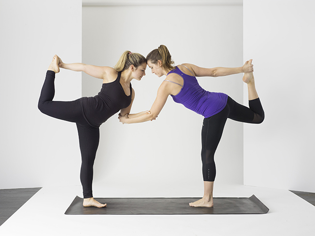

Om yogabalance
Yoga er nøglen til balance
yogabalance er for dig, der vil træne effektivt, styrke din krop og skabe balance og ro i dit sind.
Ashtanga Yoga er den mest aktive yogaform der findes. Mange har allerede opdaget at den ikke bare er en effektiv måde at komme i form på, men både styrker og smidiggør kroppen.
Velkommen til yogabalance.

Ashtanga Yoga:
Ashtanga yoga er oplagt til dig, der gerne vil være i bevægelse, når du dyrker yoga
Astanga yoga er en dynamisk yogaform i stil med vinyasa yoga, hvor stillingerne laves i et flow, og du derfor glider fra én stilling til den næste i takt med din vejrtrækning. I modsætning til andre dynamiske yogaformer, som fx vinyasa yoga, flow yoga og power yoga, er det dog altid den samme serie af yogastillinger, der udføres i den samme rækkefølge i astanga yoga.
Hatha Yoga:
Er du ude efter en rolig yogatime med pauser mellem stillingerne, er hatha yoga et godt valg.
Navnet hatha yoga er en grundlæggende betegnelse for den fysiske del af yoga – det vil sige yogastillingerne. Hatha yoga er altså en bred betegnelse, og derfor kan de enkelte yogatimer i hatha yoga-kategorien variere meget fra lærer til lærer og session til session. Fælles for hatha yoga-timer er dog, at de ofte har fokus på at lave én øvelse ad gangen i modsætning til yogaformer, hvor stillinger forløber i et flow som i astanga yoga og flow yoga.
Hot Yoga:
Er du ude efter en intens yogatime, hvor du samtidig kan udnytte varmen til at komme dybere ind i stillingerne og få renset ud, er hot yoga for dig.
Hot yoga er en fælles betegnelse for yoga, der bliver udført i et opvarmet lokale og er altså ikke det samme som bikram yoga, der er en bestemt yogaform. Ofte ligger temperaturen til hot yoga på omkring 37-39 grader. Det varierer fra yogastudie til yogastudie og fitnesscenter til fitnesscenter, hvilke former for hot yoga de tilbyder, men nogle af de mest udbredte former for yoga, der laves i en hot yoga-variant, er hot hatha yoga, hot flow yoga og hot yin yoga.